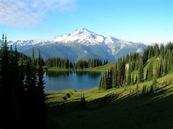

Manali (Hindi: manālī, pronounced [mənaːliː]) is a resort town, near Kullu town in the Kullu district in the Indian state of Himachal Pradesh.[3] It is situated at the northern end of the Kullu Valley, formed by the Beas River. The town is located in the Kullu district, approximately 270 kilometres (170 mi) north of the state capital of Shimla and 544 kilometres (338 mi) northeast of the national capital of New Delhi. Manali is a popular tourist destination in India and serves as the gateway to the Lahaul and Spiti district as well as the city of Leh in Ladakh.[4]
Manali is the beginning of an ancient trade route through Lahaul (H.P.) and Ladakh, over the Karakoram Pass and onto Yarkand and Hotan in the Tarim Basin of China. As per the 2011 Census of India, the Manali Municipal Council had a population of 8,096, comprising 4,717 males and 3,379 females. Updated estimates suggest the town’s population is approximately 11,700 as of 2025.[5]
Manali is named after Manu, the progenitor of humanity in Hinduism. The name Manali is regarded as the derivative of Manu-Alaya (transl. 'the abode of Manu').[6] In Hindu cosmology, Manu is believed to have stepped off his ark in Manali to recreate human life after a great flood had deluged the world at the end of an cyclic age. The Kullu Valley in which Manali is situated is often referred to as the "Valley of the Gods". An old village in the town has an ancient temple dedicated to the sage Manu.[7]
Manali’s history blends ancient mythological traditions with trade, medieval temple heritage, and modern tourism development. The town’s name derives from Sanskrit Manu-Alaya (“abode of Manu”), reflecting a local legend that Sage Manu resettled humanity here after a great flood. In medieval times, the region was part of the broader Kullu principality and saw the construction of enduring temples such as the 16th-century Hidimba Devi Temple. Under British rule in the 19th and early 20th centuries, Manali began to emerge as a hill retreat, with infrastructure and orchard cultivation introduced by colonial visitors. After Indian independence, Manali’s growth accelerated as a tourist destination, facilitated by improved road links and leisure amenities.[8]
Captain A. Banon and J.S. Mackay were the early apple orchardists in Manali.[9]
Manali’s urban local governance evolved from a Notified Area in the early 1960s to formal municipal administration under state law. After implementation of the Himachal Pradesh Municipal Act, 1994[10], Manali was constituted as a Nagar Panchayat in 1994 as the town’s population and built-up area expanded. With further socio-economic growth and expansion of urban infrastructure, it was upgraded to a Municipal Council in 2009[11], and is officially listed among the Municipal Councils of Himachal Pradesh. The Municipal Council, Manali[12] functions under the Directorate of Urban Development, Govt. of Himachal Pradesh, and is responsible for urban planning, land regulation, roads, sanitation and waste management, water supply, public amenities, and local development. The administrative headquarters of the council is located near Nehru Park in Manali.[13]